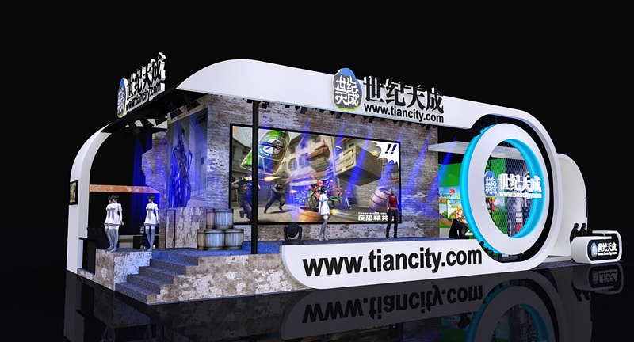
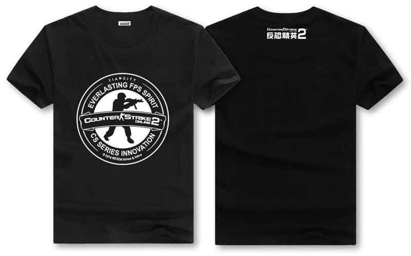
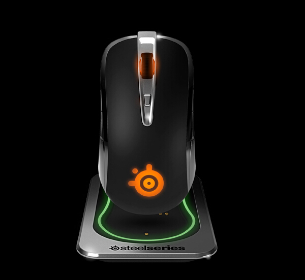
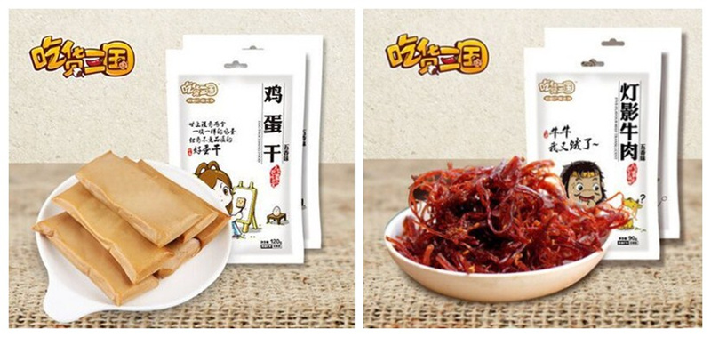

2015世纪天成ChinaJoy 精彩预告首发
发布日期：2015年07月28日
2015年的ChinaJoy即将开幕，世纪天成秉持开心游戏的理念，在这个炎炎夏日，为众位玩家准备了丰富精彩的游戏内容，重磅游戏试玩火热呈现，还有数量丰富的精美周边，210平米科幻式舞台，靓丽的Showgirl以及充满乐趣的互动游戏。7月30至8月2日，2015年ChinaJoy活动现场E6-10-01世纪天成展台，静候各位的光临！和世纪天成一起来享受这个游戏的盛会吧！
【火热现场 感受Showgirl的魅力】
和世纪天成一起来享受最热烈的现场气氛，更有火热的Showgirl为大家奉上无与伦比的魅力！每日三场精彩Showgirl表演秀，这里的妹子或清纯、或美艳、或萝莉、或御姐，各位玩家快来用镜头捕捉你心目中的女神吧！现场活动舞台梦幻十足，全方位感受游戏魅力，精彩不容错过！更多互动机会，最大化视听享受，尽在世纪天成！同时，本届世纪天成的合作伙伴赛睿、吃货三国以及baby家族等都将带着各自的Showgirl前来串台走秀！千万不能错过！

【独特现场游戏 丰富试玩体验】
所有喜爱《反恐精英Online2》的玩家有福了！《反恐精英Online2》中的“躲猫猫”模式将在ChinaJoy的现场和各位玩家见面。这个独特的舞台“全民躲猫猫”游戏，到底有什么样的乐趣带给各位玩家呢？赶快来到现场加入我们吧，一定不会让各位失望！与此同时，世纪天成在本届ChinaJoy准备了品类丰富的游戏试玩体验，全新手游大作《冒险岛手游》和《萌塔英雄》等待着大家的第一手体验！
光是上面的一些游戏还不能满足各位？没有关系，更多乐趣尽在世纪天成！“头套过关”，你对你的腰肢力量充满信心么？自信的话就来挑战一下吧；“大家来找茬”，如果你的眼光够犀利，那么一定难不倒你，但是，可别过早高估了自己哦，上台一较高下；“无手穿裤子”，怎么才能穿上去呢？扭动的腰肢根本停不下来！现场还有趣味问答活动环节，《冒险岛手游》、《跑跑卡丁车手机版》、《萌塔英雄》以及《反恐精英Online2》等通通参与其中，参与赢得大奖吧！
【精美周边 拿到手抽筋】
来到今年ChinaJoy的E6-10-01世纪天成展台，当然不能空手而回，精美的周边礼品正在静候各位玩家的领取！活动多多，奖品也多多！《萌塔英雄》 抱枕、《冒险岛手游》 抱枕《反恐精英Online2》单筒望远镜、《反恐精英Online2》圆领T恤、《反恐精英Online2》大型鼠标垫、《反恐精英Online2》米拉玩偶、《跑跑卡丁车》手机版的皮蛋粒子抱枕和各色手机塞！怎么能错过！

【多品牌完美助力】 本届世纪天成ChinaJoy得到了众多品牌合作伙伴的大力支持：技嘉电脑，享受畅快的游戏乐趣；赛睿外设体验，让apm直线飙升；统一运动饮料，流再多汗水也不怕；吃货三国，美味零食无处躲。这些合作伙伴都带来了丰富的奖品，在这里要感谢以上品牌的大力支持，让我们一起畅享2015ChinaJoy！

没时间到现场？看不到妹纸拿不到奖品？没关系，世纪天成官方微博和世纪天成活动平台微博将同期展开互动活动，线上线下相配合，一定能满足各位玩家的需求！同时，更有世纪天成官方微信为你带来每日看点、现场直击、活动预告、showgirl展示！请关注新浪世纪天成官方微博、世纪天成活动平台以及世纪天成官方微信号，和我们一起互动吧！
世纪天成官方微信二维码如下：
世纪天成
//www.tiancity.com/
7月28日